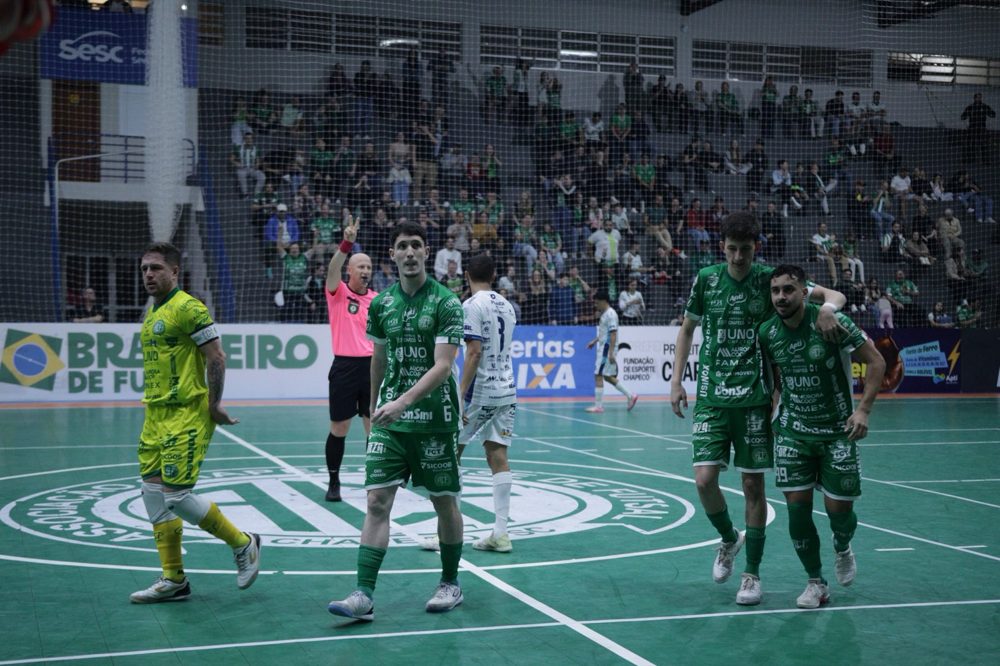
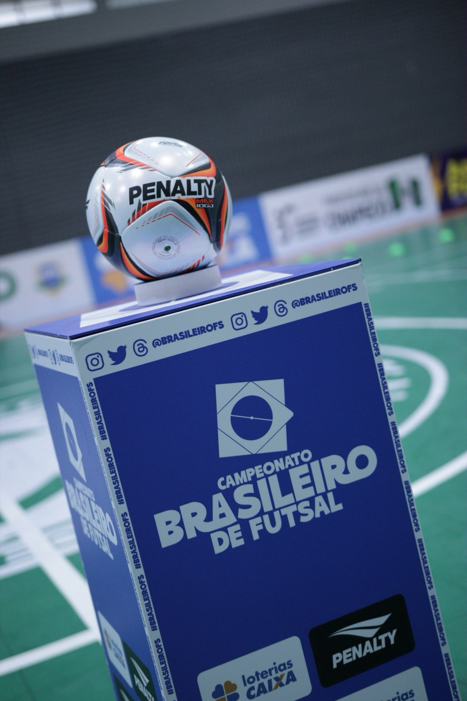

A Prefeitura de Chapecó/Chapecoense/Unochapecó entra em quadra neste sábado (24) para iniciar a disputa por uma vaga na semifinal do Campeonato Brasileiro de Futsal. O Verdão das Quadras enfrenta o Criciúma, às 17h, no Ginásio Municipal Irmão Walmir Antônio Orsi, no Sul do Estado, pela partida de ida das quartas de final. O canal da CBFS TV no Youtube transmite o duelo ao vivo.
A Chape Futsal chega à fase eliminatória após encerrar a primeira fase na terceira colocação, enquanto o time de Criciúma terminou em sexto lugar. Com a melhor campanha, a equipe do Oeste catarinense conquistou o direito de decidir a classificação diante de sua torcida. O confronto de volta está marcado para o dia 31 de outubro, sábado, às 17h, no ginásio do SESC, em Chapecó.

Artilheiro da Chapecoense na temporada 2026, com 39 gols, o ala Kassula destacou a importância de iniciar bem a disputa do mata-mata. O jogador ressaltou o trabalho realizado pelo grupo para conquistar uma boa colocação na etapa classificatória e ter a oportunidade de disputar o segundo confronto em casa.
"A gente lutou bastante para se classificar da melhor forma possível no Brasileiro. Agora é encarar o Criciúma lá, tentar fazer um grande jogo e voltar para casa, com a nossa torcida no SESC, para fazer uma grande partida e se classificar", afirmou Kassula.
Foco no objetivo
O atleta também reforçou a importância do certame nacional no planejamento da Chape Futsal para esta temporada. "É um dos objetivos principais do clube no ano", acrescentou. O foco é conquistar um resultado positivo fora de casa neste sábado e chegar em boas condições à partida decisiva, quando contará com o apoio da torcida verde-branca na busca por uma vaga entre os quatro melhores do Campeonato Brasileiro.

Fotos: @rogersilva_fotografia/@achapefutsal